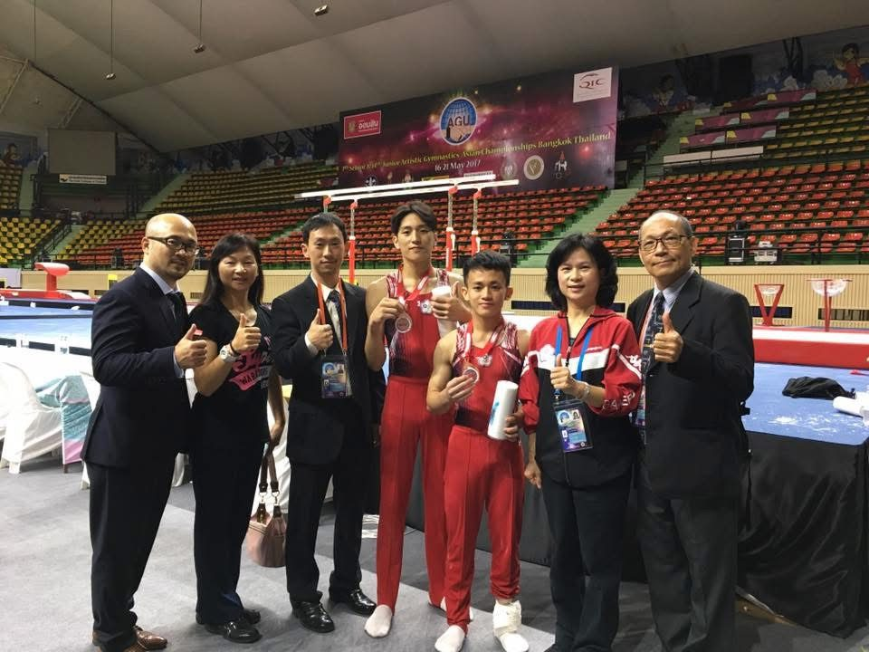
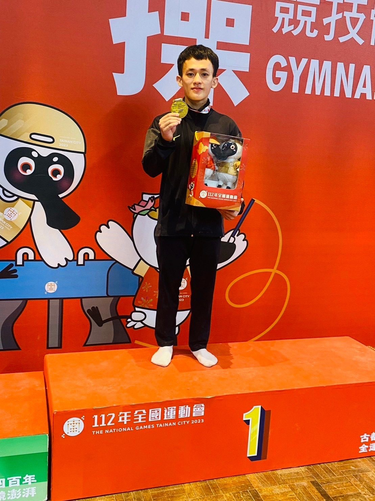
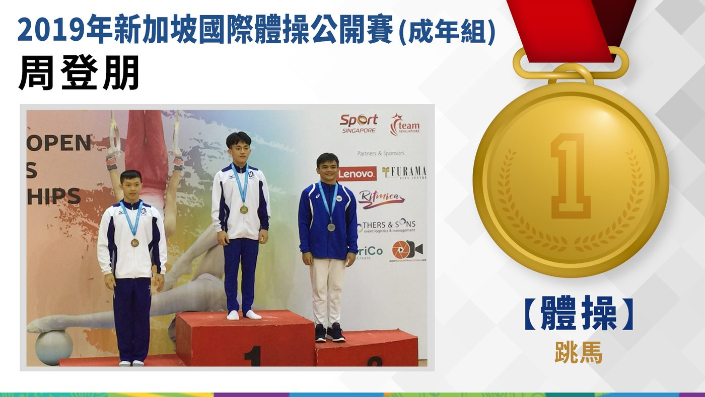

01我的故事
泰雅勇士-體操小巨人
我是周登朋，來自宜蘭縣寒溪部落，泰雅族，基督徒，現為競技體操運動員。
自幼稚園開始接觸體操，因身形較為嬌小，被教練選中而踏入體操之路。從小學至高中期間，我持續投入系統性訓練與各級賽事，在比賽中累積實戰經驗，也逐漸建立對體操的熱愛與堅持。
在長期訓練與競技過程中，我曾歷經傷勢與手術挑戰，但仍選擇持續復健並重返賽場。這段經歷讓我更深刻理解運動員的韌性，也成為我再次出發的重要基礎。
運動生涯與成就
2017年：首次參加國際賽，在亞洲青少年體操錦標賽中，獲得青少年男子團體第三名，這對我而言是莫大的肯定。 同年10月，因手腕受傷進行手術，雖然復健過程辛苦，但我堅持不懈。
2019年：獲選為亞洲錦標賽國手，台灣隊獲得團體第三名。同年，在新加坡公開賽中跳馬項目獲得金牌。
2020年：代表宜蘭縣參加中華民國108年全國運動會體操比賽，獲得男子組競技體操跳馬競賽金牌
2023年：作為國立臺灣師範大學體操隊成員，參加112年全國大專院校運動會競技體操項目，獲得公開男子組成隊競賽金牌，達成三連霸。
2024年：入選國家訓練中心，參與烏茲別克亞洲錦標賽及匈牙利世界盃挑戰賽，並在挑戰賽中進入前八名。
未來目標
這些經歷讓我累積了豐富的經驗，並確信這是上天給予我的恩典，使我能為國爭光。雖然曾在比賽中受傷，但我依然積極進行復健並努力訓練，朝著既定的目標邁進。感謝一路上給予我幫助的人，未來我也將善用資源，以取得更好的成績。謝謝！


